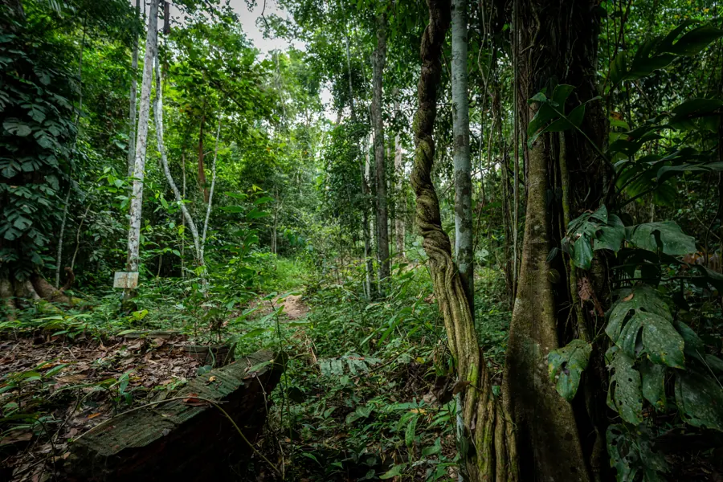
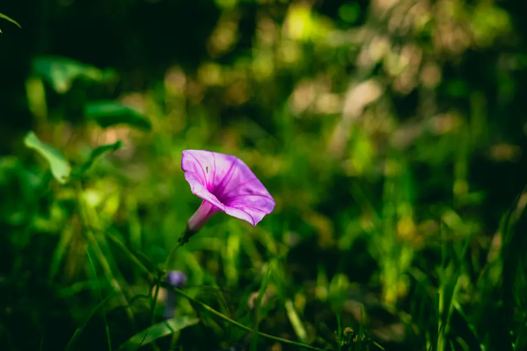
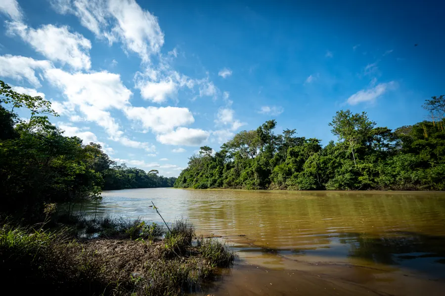

APA Igarapé São Francisco
Rio Branco e parte de Bujari
30.004
hectares
6.114
pessoas (estimativa)
Uma iniciativa de cooperação internacional que reúne instituições nacionais e internacionais para fortalecer a conservação ambiental, promover o desenvolvimento sustentável e ampliar a capacidade das comunidades das Áreas de Proteção Ambiental (APAs) Igarapé São Francisco e Lago do Amapá de enfrentar desafios ambientais, climáticos e sociais.

O Programa foi criado para fortalecer a conservação ambiental e aumentar a resiliência socioambiental de dois territórios estratégicos para Rio Branco, capital do Acre, e parte do município de Bujari: as APAs Igarapé São Francisco e Lago do Amapá. Essas unidades de conservação são essenciais para a proteção dos recursos hídricos, da biodiversidade e da qualidade de vida das comunidades que vivem em seu entorno.
A proposta integra proteção ambiental, desenvolvimento sustentável e inclusão social, com ações voltadas à redução de vulnerabilidades, ao fortalecimento da gestão das APAs, à recuperação de áreas degradadas, à ampliação da segurança hídrica, ao incentivo a atividades econômicas sustentáveis e à maior participação das comunidades na gestão do território.
É a capacidade de um território, de suas comunidades, instituições e ecossistemas de enfrentar desafios, adaptar-se às mudanças e recuperar-se de impactos ambientais e sociais sem perder sua capacidade de gerar qualidade de vida. Isso significa proteger os recursos naturais, fortalecer as comunidades e preparar os territórios para responder melhor a situações como queimadas, enchentes, secas, desmatamento e mudanças climáticas.
As APAs Igarapé São Francisco e Lago do Amapá são territórios estratégicos para a proteção dos recursos hídricos, da biodiversidade e da qualidade de vida de milhares de pessoas que vivem em Rio Branco. O Programa conecta a conservação desses territórios ao fortalecimento das condições sociais e econômicas das comunidades e à sua capacidade de responder às mudanças ambientais e climáticas.
Juntas, as duas APAs representam um território de atuação com impacto direto sobre aproximadamente 11.329 moradores.
Ver as entregas no mapa →

O Programa promove a resiliência socioambiental por meio de ações integradas que fortalecem os territórios, protegem os recursos naturais e ampliam a capacidade das comunidades de enfrentar os desafios ambientais e sociais. Isso é feito por meio de quatro eixos estruturantes, além de um eixo transversal.

Fortalecimento da participação social, da gestão das APAs, da educação ambiental e da atuação dos Conselhos Gestores.

Recuperação de áreas degradadas, proteção de nascentes e restauração de Áreas de Preservação Permanente (APPs).

Incentivo às cadeias produtivas sustentáveis, à agricultura familiar, ao turismo de base comunitária e à geração de renda.

Proteção dos recursos hídricos, melhoria da infraestrutura, gestão de riscos e fortalecimento da adaptação às mudanças climáticas.

Princípios presentes nas ações do Programa, ampliando a participação, o acesso a oportunidades e a inclusão nos processos de decisão relacionados à gestão e ao desenvolvimento do território.
A Agenda 2030 das Nações Unidas estabelece 17 Objetivos de Desenvolvimento Sustentável, voltados à promoção do desenvolvimento sustentável em suas dimensões social, econômica e ambiental. O Programa contribui para essa agenda ao integrar conservação ambiental, segurança hídrica, restauração de ecossistemas, fortalecimento das comunidades, inclusão social, igualdade de gênero e oportunidades econômicas sustentáveis, fortalecendo também a governança, a participação social e a cooperação entre instituições e comunidades.


O Marco Global de Biodiversidade de Kunming-Montreal, adotado em 2022 no âmbito da Convenção sobre Diversidade Biológica (CDB), estabelece uma agenda global para deter e reverter a perda de biodiversidade, com 23 metas orientadas à ação para 2030. O Programa contribui para esse compromisso ao integrar a conservação e a restauração de ecossistemas, a proteção de nascentes e recursos hídricos, a resiliência às mudanças climáticas, atividades produtivas sustentáveis e a valorização das contribuições da natureza para as comunidades. Também fortalece a governança, a participação social, a produção e a disponibilização de informações, a capacitação, a igualdade de gênero e a inclusão social na gestão e conservação do território.
 Meta 2Restauração de ecossistemas
Meta 2Restauração de ecossistemas Meta 3Conservação de áreas
Meta 3Conservação de áreas Meta 7Redução da poluição
Meta 7Redução da poluição Meta 8Resiliência às mudanças climáticas
Meta 8Resiliência às mudanças climáticas Meta 9Uso sustentável da biodiversidade
Meta 9Uso sustentável da biodiversidade Meta 10Sistemas produtivos sustentáveis
Meta 10Sistemas produtivos sustentáveis Meta 11Contribuições da natureza para as pessoas
Meta 11Contribuições da natureza para as pessoas Meta 14Biodiversidade nas políticas e no planejamento
Meta 14Biodiversidade nas políticas e no planejamento Meta 20Capacitação, cooperação e inovação
Meta 20Capacitação, cooperação e inovação Meta 21Dados, informação e conhecimento
Meta 21Dados, informação e conhecimento Meta 22Participação e tomada de decisão
Meta 22Participação e tomada de decisão Meta 23Igualdade de gênero
Meta 23Igualdade de gêneroEste site é o portal público de transparência do Programa — reúne, num só lugar, o mapa das entregas realizadas, os resultados alcançados, a execução financeira agregada e a linha do tempo das principais ações, para que qualquer pessoa possa acompanhar o andamento do trabalho nas APAs do Lago do Amapá e do Igarapé São Francisco.
A identidade visual do Programa nasce da paisagem que ele protege.
As folhas verdes representam a biodiversidade e a recuperação ambiental das APAs. As formas curvas em azul remetem aos igarapés e rios que o Programa trabalha para proteger.
As formas curvas em azul remetem aos igarapés e rios que o Programa trabalha para proteger. O laranja simboliza a transformação social e o fortalecimento das comunidades que vivem nesses territórios.
O laranja simboliza a transformação social e o fortalecimento das comunidades que vivem nesses territórios.Juntos, os três elementos traduzem o que o próprio nome do Programa propõe: resiliência entre natureza, água e as pessoas do território.
Todo o conteúdo desta página em formato de cartilha, em português e inglês, para ler offline, imprimir ou compartilhar.